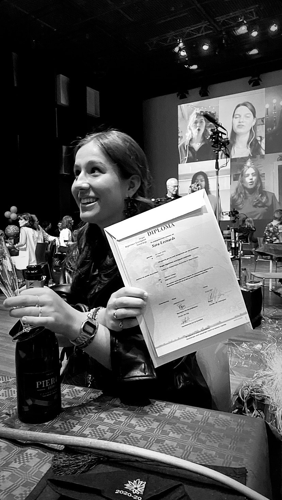
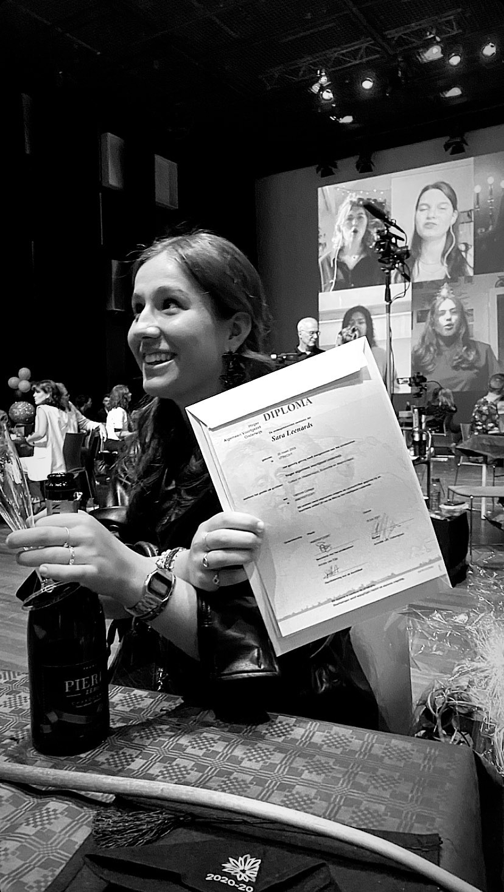

What's going on in my life now?
Ja, hoe ziet mijn leven er op dit moment uit? Nou dat zal ik je eens vertellen... Het is nu het jaar 2021 en we zitten nu al bijna twee jaar in een pandemie. Je hebt er vast wel van gehoord, COVID-19. Ik ben sinds dit schooljaar begonnen aan een nieuwe studie en dit gaat grotendeels op afstand. Ik heb nog redelijk veel online les. De dagen dat ik naar school ga in Amsterdam zijn vind ik persoonlijk de leukste dagen. Ik houd ervan om met de trein lekker naar school te gaan. De dagen zijn dan wel langer op school aangezien mijn reistijd lang is en we toch gelijk meerdere lesuren volgen.